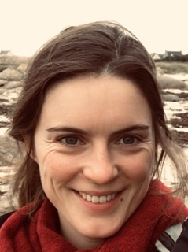
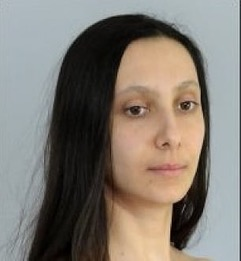
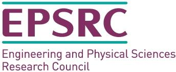

Third Symposium on Compositional Structures (SYCO 3)University of Oxford |
The Symposium on Compositional Structures is a new interdisciplinary series of meetings aiming to support the growing community of researchers interested in the phenomenon of compositionality, from both applied and abstract perspectives, and in particular where category theory serves as a unifying common language. We welcome submissions from researchers across computer science, mathematics, physics, philosophy, and beyond, with the aim of fostering friendly discussion, disseminating new ideas, and spreading knowledge between fields. Submission is encouraged for both mature research and work in progress, and by both established academics and junior researchers, including students.
Submission is easy, with no format requirements or page restrictions. The meeting does not have proceedings, so work can be submitted even if it has been submitted or published elsewhere. You could submit work-in-progress, or a recently completed paper, or even a PhD or Masters thesis.
While no list of topics could be exhaustive, SYCO welcomes submissions with a compositional focus related to any of the following areas, in particular from the perspective of category theory:
- logical methods in computer science, including classical and quantum programming, type theory, concurrency, natural language processing and machine learning;
- graphical calculi, including string diagrams, Petri nets and reaction networks;
- languages and frameworks, including process algebras, proof nets, type theory and game semantics;
- abstract algebra and pure category theory, including monoidal category theory, higher category theory, operads, polygraphs, and relationships to homotopy theory;
- quantum algebra, including quantum computation and representation theory;
- tools and techniques, including rewriting, formal proofs and proof assistants, and game theory;
- industrial applications, including case studies and real-world problem descriptions.
This new series aims to bring together the communities behind many previous successful events which have taken place over the last decade, including Categories, Logic and Physics, Categories, Logic and Physics (Scotland), Higher-Dimensional Rewriting and Applications, String Diagrams in Computational, Logic and Physics, Applied Category Theory, Simons Workshop on Compositionality, the Yorkshire and Midlands Category Theory Seminar, and the Peripatetic Seminar in Sheaves and Logic.
This event follows SYCO 1 held in Birmingham in September 2018, and SYCO 2 held Strathclyde in December 2018.
Invited speakers
|  |  |
| Marie Kerjean | Alessandra Palmigiano |
| INRIA Bretagne Atlantique, Equipe Gallinette |
Faculty of Technology, Policy and Management, Delft University of Technology Department of Pure and Applied Mathematics, University of Johannesburg |
| Differentiating proofs and programs | Logical foundations of categorization theory |
Important dates
All deadlines are 23:59 anywhere-on-earth on the given dates.
Submission deadline: Friday 15 FebruaryAuthor notification: Wednesday 27 FebruaryTravel support application deadline: Wednesday 6 March- Registration deadline: Wednesday 20 March
- Symposium dates: Wednesday 27 March and Thursday 28 March 2019
Accepted Presentations
The following submissions have been accepted for presentation:- Chase Bednarz, Occlusion Operadssion Operads for Image Segmentation
- Lukas Heidemann, Nick Hu and Jamie Vicary, Introducing homotopy.io
- Tai-Danae Bradley, Martha Lewis, Jade Master and Bradley Theilman, Translating and Evolving: Towards a Model of Language Change in DisCoCat
- Martha Lewis, Compositionality for Recursive Neural Networks
- Cosimo Perini Brogi, Kleisli Triples in Homotopy Type Theory. A Case in Mathematical Philosophy
- Fosco Loregian and Ivan Di Liberti, On the unicity of formal category theories
- Samson Abramsky, Rui Soares Barbosa, Martti Karvonen and Shane Mansfield, A comonadic view of simulation and quantum resources
- Stefano Gogioso, Categorical Quantum Dynamics
- Chad Nester, Constructing Cryptocurrency Ledgers with Monoidal Categories
- Antonin Delpeuch , Autonomization of monoidal categories
- Thorsten Altenkirch, Naturality for free – the category interpretation of directed type theory
- Sharwin Rezagholi, Tobias Fritz and Paolo Perrone, The support is a morphism of monads
- Neil Ghani, Clemens Kupke, Alasdair Lambert and Fredrik Nordvall Forsberg, Compositional Game Theory with Mixed Strategies: Probabilistic Open Games
- Mario Alvarez-Picallo and C.-H. Luke Ong, Change Actions: Models of Generalised Differentiation
- Maaike Zwart and Dan Marsden, Don't Try This at Home: No-Go Theorems for Distributive Laws
Registration
Please register by filling in the registration form. There is no registration fee, but please register so that we can order the right amount of catering, and give you a badge. The registration deadline is Wednesday 20 March, one week before the meeting.Local information
Brexit is due to happen on 29 March. If you are travelling outside the UK, it is advisable to leave the UK by the evening of the 28th.
The local organizers are Fatimah Ahmadi, Christopher Dean, Antonin Delpeuch, Jean-Simon Lemay, Benjamin Musto and David Reutter.
Venue. The meeting will take place at the University of Oxford in Lecture Theatre B of the Department of Computer Science on Parks Road.
Accommodation.
A number of colleges offer spare rooms which are very well located and quite affordable.
It is also worth considering AirBNB.
B&Bs can also be found at Oxford Bed and Breakfast, Abodes of Oxford, TripAdvisor and Booking.com
The Cotswold Lodge Hotel is within walking distance.
The Old Parsonage Hotel is more luxurious and also very close to the venue.
Trains Oxford Station is 20 minutes walk from the venue. More information on times and fares can be found at National Rail Enquiries and TheTrainLine.
Planes Oxford is well connected to both London Heathrow and London Gatwick airports. The Airline bus service from Heathrow to Oxford takes approximately 90 minutes. The Airline bus service from Gatwick to Oxford takes about 2½ hours. National Rail also connects all these airports to Oxford.
Birmingham airport is also connected to Oxford by National Express and National Rail services.
Coaches Oxford Gloucester Green Bus Station is 15 minutes walk from the venue. National Express services connect Oxford to many other locations. The Oxford Tube and X90 services both connect Oxford to central London including London Victoria and take about 90 minutes. They take slightly different routes. See Oxford Tube route information and X90 Route Information.
Cars Parking in central Oxford is extremely limited. There are a number of Park and Ride locations. Buses from Pear Tree and Water Eaton stop quite close to the venue.
Local Buses Information on local buses can be found at the Oxford Bus Company. Buses now accept contactless payment (using, for example, contactless credit card or ApplePay) and no preliminary setup is required.
Taxis There are taxi ranks at Gloucester Green Bus Station and Oxford Station. A1 Taxis can be booked by phone at 01865 248 000 or booked online.
Schedule
To be announced.
Sponsorship
We are pleased to acknowledge financial support from EPSRC.
|  |
Deferral
The intention is for SYCO to be a community meeting, where people have enough time to explain their ideas, and with a friendly and non-competitive atmosphere. To encourage this, in the event that more submissions are received of an acceptable standard than can be accommodated in the timetable, the programme committee may choose to defer some submissions to a future meeting, rather than reject them. This would be done based largely on submission order, giving an incentive for early submission, but would also take into account other requirements, such as ensuring a broad and inclusive scientific programme. Deferred submissions can then be re-submitted to any future SYCO meeting, where they will be prioritised for inclusion in the programme, and where they will not need to be re-reviewed. Meetings are held sufficiently frequently to avoid a backlog of deferred papers.
Submissions
Submission is now closed.
Submissions should present research results in sufficient detail to allow them to be properly considered by members of the programme committee, who will assess their interest to the SYCO community. We encourage the submission of work in progress, as well as mature results. There are no proceedings, so work can be submitted even if it has been previously published, or has been submitted for consideration elsewhere. There is no specific formatting requirement, and no page limit, although for long submissions authors should be aware that reviewers will not be able to read the entire document in detail. Think creatively—you could submit a recent paper, or a draft notes of a project in progress, or even a recent Masters or PhD thesis.
If you have a submission which was deferred from a previous SYCO meeting, it will not automatically be considered for SYCO 3; you still need to submit it again through EasyChair. Such a submission will be prioritised for inclusion in the SYCO 3 programme. When submitting, enter the author and title information as usual into the EasyChair submission form, but in the "abstract" field, just state that it is a deferred submission, and give the meeting and submission number where it was originally reviewed. There is no need to attach any documents, but you can if you like, for example if the work has developed since the previous submission; in this case, please give a one-sentence summary in the "Abstract" field of the EasyChair submission form of the way it has changed.
Travel support
Some funding is available to cover travel and subsistence costs, with a priority for PhD students and junior researchers. To apply for this funding, please contact the local organizers Antonin Delpeuch (antonin.delpeuch@cs.ox.ac.uk) or Ben Musto (benjamin.musto@cs.ox.ac.uk) with subject line "SYCO 3 funding request" by 6 March, with a short statement of your current status, travel costs and funding required
Programme committee
- Fatimah Ahmadi, University of Oxford
- Miriam Backens, University of Oxford
- Corina Cirstea, University of Southampton
- Bob Coecke, University of Oxford
- Carmen Maria Constantin, University of Oxford
- Antonin Delpeuch, University of Oxford
- Brendan Fong, Massachusetts Institute of Technology
- Dan Ghica, University of Birmingham
- Giuseppe Greco, Utrecht University
- Helle Hvid Hansen, Delft University of Technology
- Jules Hedges, University of Oxford
- Chris Heunen, University of Edinburgh
- Dominic Horsman, University of Grenoble
- Dimitri Kartsaklis, Apple
- Kohei Kishida, Dalhousie University
- Aleks Kissinger, Radboud University Nijmegen
- Alexander Kurz, University of Leicester and Chapman University
- Jean-Simon Lemay, University of Oxford
- Martha Lewis, University of Amsterdam
- Dan Marsden, University of Oxford
- Samuel Mimram, École Polytechnique
- Michael Moortgat, Utrecht University
- Nina Otter, University of California, Los Angeles
- Simona Paoli, University of Leicester
- Robin Piedeleu, University College London
- David Reutter, University of Oxford
- Mehrnoosh Sadrzadeh, Queen Mary University of London (chair)
- Christine Tasson, Paris Diderot University
- Jamie Vicary, University of Birmingham and University of Oxford
- Tamara von Glehn, University of Cambridge
- Quanlong Wang, University of Oxford
- Gijs Wijnholds, Queen Mary University of London
- Philipp Zahn, University of St. Gallen
- Fabio Zanasi, University College London
Steering committee
The symposium is managed by the following people. If you have a general question about SYCO, or if you want to propose to host a future version, please get in touch with a member of the steering committee.- Ross Duncan, University of Strathclyde
- Chris Heunen, University of Edinburgh
- Dominic Horsman, University of Grenoble
- Aleks Kissinger, Radboud University Nijmegen
- Samuel Mimram, École Polytechnique
- Simona Paoli, University of Leicester
- Mehrnoosh Sadrzadeh, Queen Mary
- Pawel Sobocinski, University of Southampton
- Jamie Vicary, University of Birmingham and University of Oxford